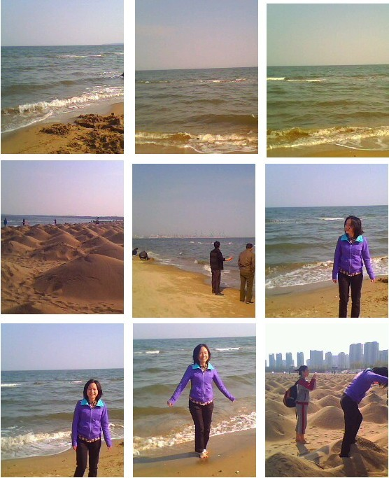
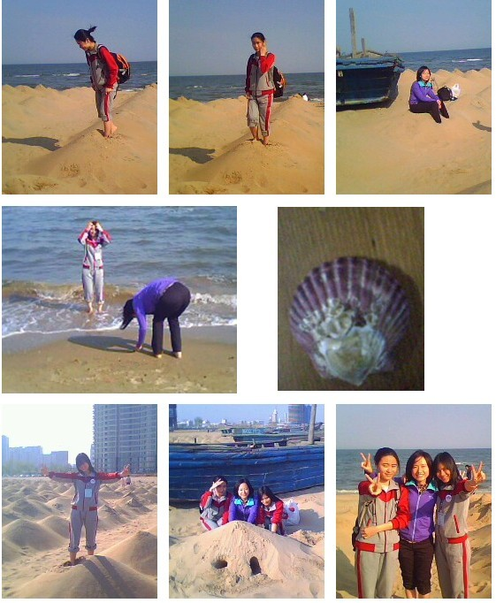
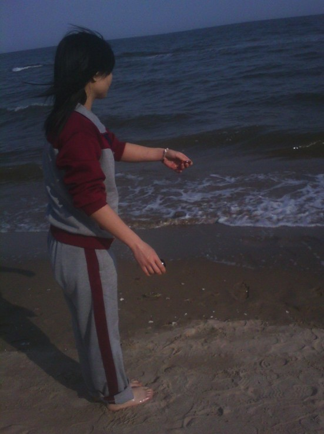
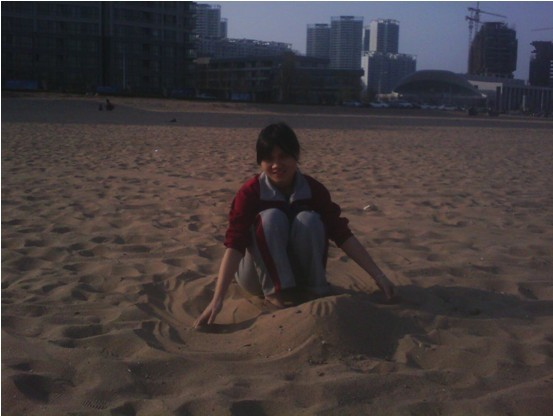
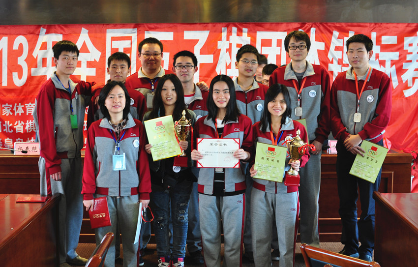

吖`吖之2013年团体锦标赛花絮
#1 吖`吖之2013年团体锦标赛花絮 作者：天逸乄西西 发表时间：2013-5-7 21:21:33
先声明一下，这个花絮比较罗嗦，本人语言能力也不强，看不下去的可以直接略过，谢谢吖~！
我也不知道这个是花絮还是回忆录了。。。。本人记性不好，脑子回忆得晕晕沉沉的！
在开讲之前，想先来个小总结：这次比赛自己整体来说并不满意，状态也不是很好，虽然我们队获得了第二名，但还是觉得很遗憾, 因为由于我思维 反应迟钝的原因，导致我们队只获得了第二名，如果自己对“团体赛”的认识再强些，我觉得我们应该是第一名的,有两盘棋都是稳和的，只要和了其中一盘，那我们就是第一了，但都被我搞砸了，觉得很对不起其他两个队友跟炫飞家族。只能争取下次拿第一！！
（一）
由于自己所在的城市没有直达到秦皇岛的，只能转车，虽然从北京转车是时间最短价格也最便宜的，但由于想有个伴一起上路，所以选择了价格很昂贵时间也很长的路线：上海转车到秦皇岛。这个路线来回要坐四天四夜的车，比比赛时间还多一天，到现在才反应过来。。。。。真难以想象自己竟然坚持这么转车，在这里想说的是，对于我这个路线的选择，费用要比到北京转车还高出几百块，但炫飞家族一句抱怨的话都没有提过，直接就帮我们定了车票，真的很让我感动。
由于我们两都没带棋，在车上那是相当无聊吖，不过还好，我们聊得很 hi ，两人都特兴奋。我们对面铺是一对叔叔阿姨，就跟他们闲聊起来，不记得到底是怎么回事了我们就聊到中医上去了，这下可合了狮子的专业。这狮子可算出了回风头，在车上免费给人把起脉来，隔壁床位的叔叔也忍不住伸手过来把个脉，就这样，整个床位的人由中医开始相互聊起天来，让本来很冷清的床位一下热闹起来，哈哈哈，让我也稍微微的学了一下下把脉，当了一回半路学徒。
大概是我们两一遇到比赛就特别兴奋吧，到了晚上熄灯该睡觉了，我们还在喋喋不休的聊着，中铺那叔叔终于受不了叫我们睡觉去，我们又聊了会到 1 点多才散场。。。。真是对不住其他床位的叔叔阿姨了，唉 太兴奋了！
第二天早早就醒了，还有 12 个小时才到秦皇岛，我们又是一通狂聊。突然手机响了，竟然是炫飞副总笑醉打来的。来之前就约好了，这次她也一起到秦皇岛，大家聚一聚，所以很好奇她这个时候来电有啥要紧事。
“ hello ，笑醉。”
“吖吖吗，那个，我跟你说一下哈。”还是熟悉的沙哑的声音
“怎么了？笑醉。”
“那个，就跟你说一下，我可能不能去秦皇岛了！”
“啊！！！！为什么吖？ !!! ”我以为我听错了
“那个，你听我说。爱沙尼亚的那个连珠秘书长来我们这访问，我可能要接待他。。。。。。”
“不是吧，怎么这么巧。。。。。。我还这么期待呢。。。。。”
“我也没办法了。。。。。。接待完他我再看下时间能不能赶得及，赶得及我再过去。。。。。。”
“好吧，那到时候再联系吧。。。。。。” 好无奈
“恩，到时候再看看吧，这次我不能去现场给你们加油了，不过在这里也给你们加油，那边天气比较冷，你们要休息好，多注意身体，好好比赛。。。。。。”
“恩，好。” 又一次体验到了笑醉的体贴。
就这样，本来很期待跟笑醉的会面就这么泡汤了，多少有些遗憾。
早上 9 点左右我们对面的叔叔阿姨下车了。中午时分，我们正泡着泡面，对面铺上来了一对东北夫妇，带着他们的宝贝儿子，他们这宝贝可不简单，身材比一般同龄小孩要胖上一倍，脸也由于太胖了两边腮肉都有点下垂，泛红泛红的，挺可爱。这小不点一上来我就觉得不太对劲了，因为他们上车那会我正在吃着午饭——泡面。那小不点从上车那会注意力就没离开过我的泡面 - - 果然，那小不点从上车坐稳了后就一直喊着吃东西，感觉总吃不饱一样，他的父母也在忽悠他先睡觉，但他就只是喊着吃。。。。。。这下明白他为何这么胖了 - -b
小不点的父母为了分散他吃的注意力，就跟他玩起了扑克。我坐那看着他们玩扑克，狮子在我旁边用她的本本玩扫雷。这扫雷还是我昨天刚教的狮子技巧，没想到她一下就迷上了，哈哈哈哈。过了一会，那小不点也玩累了，吃了点东西就睡着了，这时狮子的本本也没电了，我们两百般无聊吖。突然看到放在桌上的那副扑克，就向狮子提议来打牌，但我什么牌都不会打，连最流行的斗地主也不会 - -b 狮子很是郁闷吖。。。。。想了半天想不出我们可以怎么玩扑克 - -b 最后那小不点的爸爸给我们出了个主意，玩“记忆牌”。
所谓的“记忆牌”，从字面意思就能想象得出，就是靠记忆！双方各抽 12 张牌，然后各自记下自己的牌，记好后双方交换手牌，然后各自说出自己刚才记忆的牌出牌，让对方帮自己出牌，就是这么纠结的玩法。。。。。。我们之所以决定这么玩，是因为我们两记性都不好，就想看看两记性不好的人会玩出什么效果。。现在想想我们两够无聊的 - -b
结果记忆 12 张牌的玩法我果断赢多输少，狮子不甘心了，决定加一张牌，那就是记忆 13 张牌了，也奇了怪了，这加了一张牌，玩多少局都是我挂掉 - -b 狮子就利用我记不住牌让我出牌，说不出自己的牌就挂掉了，真是损招吖！！
正当我们玩得晕头转向的时候，突然收到寒月的短信，说她准备到了，让我们等等她一起去宾馆，经过了解得知，我们跟寒月竟然在同一列车上！！！ 真是外号！！！只不过她是硬坐，我们是卧铺，她不能到我们这边来。没办法，只好等下车了再汇合了。此时已经是下午 6 点了，按着原来的计划应该是已经到秦皇岛了的，但由于列车晚点，至少还得一个小时才能到达。
我们的“记忆大赛”继续进行，还是 13 张，此时我们都已经是“记”得筋疲力尽了，两人都昏天暗地的，又奋斗了几局，我还是完挂，抗不住了，趟下休息一会。由于睡眠不足，一躺下头又疼，不趟了，坐起来，要求跟狮子来个“终极大记忆”。那就是追加牌数为 20 张！哈哈哈哈，这可把狮子吓了一跳，说我们疯了！结果我们真的疯狂的玩起了 20 张的记忆牌 - -b 说来也怪吖， 20 张牌局局我胜，这可把狮子郁闷到了，哈哈哈。正当我们玩得正起劲时，秦皇岛到了！我们就匆匆忙忙的下了车，到约定好的地方找寒月！
一下火车就觉得一股冷意袭来，幸好还带了件外套。三人都怀着期待的心情出了车站，没想到竟然下着雨 - - 结果只有寒月一人带了伞，只可惜她那小玲珑伞容不下我们三人，雨也下得不是很大，我就干脆一路跑着带他们找公交站。上了车，站稳了，拿手机出来一看才发现我们的领队兼教练——混混竟然给我打了几个电话！只可惜刚才只顾着找出站口跟找车站，一直没听到响动。
下了车，就直接看到“秦海宾馆”字样，还真是直接坐到宾馆门口吖，真方便。直径走进宾馆，但不知道该办些什么手续，此时想起了领队，赶紧 call 他，
“混混吗？我们已经到了。”
“你们到哪了？”
“我们现在宾馆大厅呢，你下来帮我们弄下手续什么的好吧？”
“你们到宾馆了？真是太好了，我马上下来。”
（二）
“怎么这么晚才到吖。。。。。。” |
“我们车晚点了，没办法。。。。。。”
“吖吖，你头发怎么了？”领队混混看着我一头的湿发不解的问道。
“我们可是淋着雨过来的吖，没带伞。。。。。。头发都湿了。”
“那你们先去放行李，洗个澡，然后大家一起吃个饭吧，也相互认识一下。”
“他们人都全到了？”
“就等你们了，男子组还有两个要晚上才到。”
有个领队就是好吖，都已经帮我们安排好了，心里觉得暖暖的！！
由于冒雨过来的，又在车上过了两天两夜，必须得先洗个澡再说。洗好了直接就穿着队服了，因为之前就觉得队服应该挺好看的，所以很想早点试穿下，果然，这次的队服很是满意。收拾好了行李，我们就一起下一楼吃饭了，这次还是自助餐，我们炫飞的人坐在了一桌。刚吃了几口，领队混混就开话了，
“我这也是第一次做领队，还不知道能不能做好，大家多多关照吖。你们看我们的女队把队服都穿上了，真积极吖。大家先来个自我介绍一下吧，不然大家都相互不认识。”
大家貌似都很害羞或者是大部分的人都相互认识吧，一开始大家都不愿意主动自我介绍，混混可就急了，得起到一个领队的作用吖，就点名新人做个介绍。当然，这里所谓的新人，指的是去年没代表炫飞一起出来比赛的人（包括仇云飞，殷立成，胡瑜，韩悦 MM ，其实我觉得应该也包括王硕小朋友，因为去年我印象中根本没见过他。。。。。。）。经过几句简单的问答后，大家算是相互认识了，这认识的过程真是别扭吖。。。。。。快吃饱时，大家的注意力竟都放在了殷老师这个重量级的大人物上，你一言我一语的向殷老师表示“关心”：
“殷老师，你这个吃饱了吗？”
“殷老师，还有两队员没来，等会晚点再一起吃消夜吖！”
“你们就别瞎操心了，殷老师留着肚子等会做为代表陪那两同志呢。。。”
“哈哈哈。。。。。。”
看来殷老师这次注定成为我们炫飞的重点关注人物了。。。。。。
吃好了饭，大家都各自回房间了，我们女队明天的第一轮对手是南通的小朋友，所以大家都觉得没什么压力。在混混的房间开完了集体会议，我们就很无聊的想玩联棋，但其他人都散去了，估计准备明天的比赛去了吧。
这次我们女队又是三个人住一间房，果断的很团结，是不？哈哈哈哈。有点让我意外的是，见了混混他们才知道秋风大叔也会过来，这多少让我有点意外加感动吖，虽然不比赛，却还能到现场来助阵。这次花样也有来，还带了位帅 GG 陪同，介绍说是她哥！
期待的比赛终于开始了，这次比赛一共比 7 轮，男女队都各有 12 个队，我们女队说实话，被认定为是对手的应该只有三个队，上海队，湖北队，秦皇岛建设路小学队，这建设路小学虽然字面上是小学队，但实际上真正的小学生只有三台一人而已，一二台都是妈妈级别的人物了，水平都还不错，所以也得列入对手行列。这次比赛领队还特意去给我们每人买了一瓶水和笔，这个后勤工作做得真不是一般的好吖！
我们女队第一轮对的是南通小朋友 2 队，本来以为会很轻松就搞定的，结果看来我们都轻敌了，没想到我们那桌竟然是最后才结束的，最后还是以 1 ： 2 输掉了第一轮，这个悲剧吖。。。。。。心情一下跌到了万丈深渊，提不起劲。这一消息也迅速的散开了，网络上爱五论坛也标出两大标题来报道这一爆炸性新闻，这让我跟寒月更是面临着巨大的心理压力跟舆论压力，领队混混知道后立即跑过来安慰我们，努力的想办法让我们提起干劲，恢复心情。殷老师和曹冬他们也都赶过来帮我们分析棋，拆棋，很是让我们感动。
中午吃饭，没什么心情，但为了下午的两场比赛，必须得多吃些，因为不知道为什么，在比赛中很容易饿肚子，我不知道其他人是否有这情况，我反正是，所以我经常会带些吃的到比赛场地备着。正吃着，突然发现狮子隔壁坐着一位美女和一帅哥。便偷偷问寒月那两人是谁，寒月也不知道 - -b 待他们吃饱了走了，赶紧拉过狮子询问，狮子说好象是花样。我一惊，不会吧，那个是花样？？花样来了咋也不跟我们认认人介绍介绍吖！太失望了。（花样的出场就这么默默无闻的飘过）
第二轮比赛在下午也开始了，我们还是对小朋友，不知道为什么，心情无比复杂。出乎意料，对方三个小朋友竟然都没有来，无聊之余加上睡眠不足感觉很乏就趴桌子上休息等对手来，突然，左边比赛桌传来了一个急促的声音：“帮我去房间里拿我的胃药过来！！”原来是上海队的 2 台董晓丽胃病犯了，正要求裁判让他们队的后勤人员去房间里帮她拿药过来，这可引起了不少骚动吖，大家的目光“刷刷”的都集中到晓丽身上，看得出她很难受的忍耐着，这多少让我有点担心起她来，因为我们在比赛之前也是在网上认识的棋友，看到她这样多少都会有点担忧的。不一会，他们队的后勤人员就把药拿来了，看到她服下了药大家也都安心了，比赛依然有序的进行中。 15 分钟后我们的小对手还是没有出现，结果直接弃权处理，我们不战而胜。。。。。。
提前结束比赛的我们在比赛场地游荡了一会后就回房间休息了，因为依照我们的推测，今天下午的第三轮应该会碰到比较强的对手了，得养足了精神。一刚进房间，寒月就被一个电话勾引出去了，狮子也在把弄她的本本看谱，我无聊的躺在床上。过了一会，实在是够无聊的，就打算起来开电视看，这时寒月 MM 回来了，问她干吗去了，她很无所谓的冒出一句：
“刚牛牛打电话来没接到，去他房间找他去了，结果被他数落了一番。”
“这坏蛋牛牛。”
“晓丽她刚打电话来说叫我们去她房间玩，她比完赛了。”
“好吖，走吧。”
“恩，好，走”
按下晓丽的房铃，“咔礤”门开了。
“ hi ，晓丽。”
“哇，是你们吖。”
“是吖，我们队三队员专程来看望你吖，你身体没事了吧？刚才真是吓死人了吖。”
“已经没事了，吃了药，谢谢哈”
一进房间就看到桌上摆满了吃的，这果然是上海队的风格，去年也如此。不跟她客气，直接拿起巧克力就塞进嘴，真好吃！正在我们闲聊了几句后，突然一个声音从门口传来，人未到声先到吖。。。。。。
“你让我说你什么好？你说！”原来是他们的三台小可爱李洁 MM 。一进来就气势汹汹的训起话来，晓丽还没来得及反应，李洁又一顿猛训：
“我跟你说过多少次了，让你把酒什么的都戒了，你就是不听，这下好了吧？你自己说说，说说，明知道自己身体不好，为什么不在赛前把药吃了？你不知道这样会让人担心吗？还有，你。。。。。。。。（此处省略 100 字）”
不知道为什么，听到这里时眼泪莫名其妙的想往下掉的冲动，我知道自己是被他们之间的这种友谊感动了，怕被他们看到我的异常，强忍住被感动的情绪，猛咬巧克力。
晓丽被李洁训得无话可说，老老实实的听着，我们三想插几句调解下，但都不知道该如何开口，中间空隙实在太短了，李洁估计真是憋了一肚子走过来的，所以我们只能老实的听着李洁发泄心中的担忧与不满！结果还是狮子厉害，抓住了机会把话题扯开了，我们就猛夸李洁的皮肤好好，不过说真的，李洁姐姐那皮肤真不是盖的，怎么保养的吖。。。。。。跟个娃娃皮肤一样，让人羡慕！
正当我们在讨论皮肤保养的问题时，他们的一台董晨瑛比完赛回来了，一查下一轮的对阵表，竟然是我们对阵！唉 ，没办法了，我们就这么被李洁姐姐无情的赶出了房间，让他们商量战略！我们也回到房间抓紧时间想想对策，因为我们一三台是被开方，所以没什么好准备的开局，但二台的寒月 MM 就不一样了，她开局，她还在犹豫不决到底要开什么局，狮子的建议是开骗，但寒月 MM 的性格就不太像开骗的，而且貌似晓丽对骗还挺熟悉的，我就建议她开她熟悉的就行了，不用这么紧张。
下午第三轮比赛也开始了，我知道我的对手肯定会开疏星，犹豫了一下决定不换，再看看旁边的寒月，开了个松月，但第 5 手变了招，狮子那桌是李洁开局，她迟迟未下子，一直在看着我们一二桌的动态，估计是还在犹豫要下什么吧。经过一番撕杀，最终我们队以 2.5 ： 0.5 取胜。
第一天的比赛就结束了，我们女队得了 2 分，男子 1 队得了 1 分， 2 队得了 3 分。
（三）
晚上领队组织大家一块出去吃饭，酒店已经定好了，离住的宾馆不远，就徒步而去。今天到场的人可谓都齐全了，昨天晚上由于有些人的车晚点都还没照过面。大家入坐，刚好 13 个人，可以每人点一份菜呢。吃完了饭，大家都呆坐着，很无聊，这时候狮子提议来玩“杀人游戏”，这个游戏我从没玩过，不过听他们介绍后觉得貌似很有趣，有点像推理游戏，就强烈响应狮子。就这样，在我跟狮子的强烈要求下我们开始了“杀人”。
殷老师跟王硕、秋风大叔不参与，殷老师是会玩，但他只想看别人玩，因为他觉得看别人玩比自己玩还要有趣，这难道就是别人常说的看别人下棋比自己下棋有趣？？？？其他两位 GG 是因为不会玩而不玩。由于第一次玩这游戏，对规则什么的都还不了解，又太兴奋了，在第一轮时我就状况百出，不得已游戏被我 NG 了。。。。。。只能勉强玩了一两局就散场回宾馆了。
回到宾馆白菜貌似意犹未尽，提出去打台球，花样跟花样哥也附议，由于明天早上对手不是很强，我跟寒月也一块去了，狮子则去辅导一下南通小朋友。其他人都各自回房准备明天的比赛去了，领队也要去开那个什么“规则讨论会”，结果只有我、寒月、白菜、花样、花样哥五个人去。对于台球，寒月那也是相当自信吖，花样也貌似略有一手，惟独我，没怎么玩过，连拿杆都没把握。。。。。。
到了桌前，白菜跟花样哥就自顾自的打起了，我们三 MM 只好自己开一桌自己玩起。不玩不知道，花样跟寒月确实都留有一手吖，寒月那打球的姿态真是帅呆了，有学过的迹象，桌龄看起来也不少。花样也不赖，从头到尾都在指导我们该打哪个球，该怎么打。玩了两局就散了，这时候白菜说华夏的笑天他们在唱歌，叫过去一起玩，但此时已经 10 点了，寒月不想去，我倒是挺想去的，毕竟没见过笑天，想过去认认人。但考虑到明天还有比赛，寒月一个人回宾馆也不放心，就放弃了一起去的念头，回了宾馆。
。。。。。。。。。。。。。。。。。。。。。。。。。。。。。。。。。。。。。。。。。。。。。。。
我只能勉强回忆到这里了。。。。。。。记性真心不好。。。。。。语言文字也不行。。。。。。。。。
。。。。。。。。。。。。。。。。。。。。。。。。。。。。。。。。。。。。。。。。。。。。。。。
再说下关键的那一轮，就是我们对湖北那轮。当时是 4 月 29 日下午的第二轮吧，二三台的寒月狮子貌似都已经准备好了开局或者变化，只有我，还不知道下什么。就想随便看看谱什么的，但我们房间那唯一的电脑狮子在用着，无奈，我只好跑到隔壁秋风的房间借电脑用，顺便还可以向他请教下什么好。结果他给我推荐了一个变化，离比赛时间还只剩下 10 分钟了，我匆匆忙忙看了下下谱，决定就用这个。
比赛开始了，我们一三台开局，我直接开的疏星，对方出乎意料的没交换。结果我的健忘症又发作了。。。。。。我竟然忘记了跟秋风的约定，习惯性的打了一二打 - -b 打点打完，才猛的想起自己没有下刚才说好的变化。。。。。。突然觉得有点对不住秋风，这时就怕秋风大叔过来围观，扫了一眼，还好，秋风不在比赛场地，暂时松了口气，但心里还是觉得过意不去，想着比完赛了再好好跟他解释吧。
结果对方竟然更出乎意料的从第 10 手就开始变招，没办法了，从这里开始计算。结果一直是我处于优势，突然二台寒月出结果了，寒月胜了，也就是我们得了一分。再看看狮子的局面，很平，估计是和棋。就是这个关键时刻，自己犯错误了，竟然从头到尾都没意识到如果我这局保持和棋的那我们队就是赢了，那第一就是我们的了。如果我这个棋想保和我觉得是很容易的，因为是我处于优势。
但很可惜，当时自己只想着赢棋，导致后面下错了，输了！狮子知道我输了后虽然很想赢，但他们那个局面，任何一方想赢棋都不太可能了，除非对方出错！经过狮子的一番努力，结果还是和棋了，所以我们跟湖北的对局就是和棋！！但结果已经注定我们只能第二名了！
我知道这次比赛大家都抱着第一的目标去，结果只得了第二，感觉自己责任很大，没有真正的认识到什么是团体赛。对不起各位队友跟炫飞家族的朋友了！
（四）
比赛结束了，大家都回家了，我们三 MM 的车是晚上 7 点多的，所以还有几个小时可以玩，狮子就强烈建议我们去看海！没见过大海的我也无异议，寒月也只好跟着我们走！
我们拦了辆出租车就朝大海驶去，因为我们并不知道那地方具体叫什么，只能跟司机大哥说去看海，这大哥还算是个厚道的人，给我们讲了一些关于从我们那出发到大海的路线，然后帮我们选择了一条最近的，还告诉我们过后该怎么回车站，真是好心的司机大哥吖·！
还没下车就已经看到大海了，我们都兴奋不已，三人力马把鞋脱了，光着脚丫踩在沙滩上，由于这沙子经过了人工的筛沙，把一些人们丢的垃圾海上漂上来的废品都过滤掉了，所以踩在上面感觉特别柔软，特别舒服，特别细腻。我还装了一小瓶沙子回来列，哈哈哈哈。我就不废话了，大家看照片自己感受吧！


左边两张是生长在沙滩上 植物，觉得很神奇，就拍个照留念一下。
最后那张各位能猜出那一团黑乎乎的东西是什么吗？？？？
哈哈哈哈哈



［此帖子已被 天逸乄西西 在 2013-5-7 22:02:40 编辑过］
［ 黄药师 于 2013-5-7 22:08:56 时花20金币送鲜花一朵］
［ 黄药师 于 2013-5-7 22:08:56 时花20金币送鲜花一朵］
［ 黄药师 于 2013-5-7 22:08:56 时花20金币送鲜花一朵］
［ 黄药师 于 2013-5-7 22:08:56 时花20金币送鲜花一朵］
［ 黄药师 于 2013-5-7 22:08:56 时花20金币送鲜花一朵］
［ 黄药师 于 2013-5-7 22:08:56 时花20金币送鲜花一朵］
［ 黄药师 于 2013-5-7 22:08:56 时花20金币送鲜花一朵］
［ 黄药师 于 2013-5-7 22:08:56 时花20金币送鲜花一朵］
［ 黄药师 于 2013-5-7 22:08:56 时花20金币送鲜花一朵］
［ 黄药师 于 2013-5-7 22:08:56 时花20金币送鲜花一朵］
［ 黄药师 于 2013-5-7 22:08:56 时花20金币送鲜花一朵］
［ 黄药师 于 2013-5-7 22:08:56 时花20金币送鲜花一朵］
［ 黄药师 于 2013-5-7 22:08:56 时花20金币送鲜花一朵］
［ 黄药师 于 2013-5-7 22:08:56 时花20金币送鲜花一朵］
［ 黄药师 于 2013-5-7 22:08:56 时花20金币送鲜花一朵］
［ 黄药师 于 2013-5-7 22:08:56 时花20金币送鲜花一朵］
［ 黄药师 于 2013-5-7 22:08:56 时花20金币送鲜花一朵］
［ 黄药师 于 2013-5-7 22:08:56 时花20金币送鲜花一朵］
［ 黄药师 于 2013-5-7 22:08:56 时花20金币送鲜花一朵］
［ 黄药师 于 2013-5-7 22:08:56 时花20金币送鲜花一朵］
［ 佐小伊 于 2013-5-7 22:09:54 时花20金币送鲜花一朵］
［ 佐小伊 于 2013-5-7 22:09:54 时花20金币送鲜花一朵］
［ 佐小伊 于 2013-5-7 22:09:54 时花20金币送鲜花一朵］
［ 佐小伊 于 2013-5-7 22:09:54 时花20金币送鲜花一朵］
［ 佐小伊 于 2013-5-7 22:09:54 时花20金币送鲜花一朵］
［ 釣鱼岛岛主 于 2013-5-7 23:02:23 时花20金币送鲜花一朵］
［ 釣鱼岛岛主 于 2013-5-7 23:02:23 时花20金币送鲜花一朵］
［ 釣鱼岛岛主 于 2013-5-7 23:02:23 时花20金币送鲜花一朵］
［ 釣鱼岛岛主 于 2013-5-7 23:02:23 时花20金币送鲜花一朵］
［ 釣鱼岛岛主 于 2013-5-7 23:02:23 时花20金币送鲜花一朵］
［ 釣鱼岛岛主 于 2013-5-7 23:02:23 时花20金币送鲜花一朵］
［ 釣鱼岛岛主 于 2013-5-7 23:02:23 时花20金币送鲜花一朵］
［ 釣鱼岛岛主 于 2013-5-7 23:02:23 时花20金币送鲜花一朵］
［ 釣鱼岛岛主 于 2013-5-7 23:02:23 时花20金币送鲜花一朵］
［ 釣鱼岛岛主 于 2013-5-7 23:02:23 时花20金币送鲜花一朵］
［ 冰雪笑醉 于 2013-5-8 0:11:35 时奖励此帖[金币加 100 威望加1］
［ 冰雪笑醉 于 2013-5-8 0:11:58 时花20金币送鲜花一朵］
［ 冰雪笑醉 于 2013-5-8 0:11:58 时花20金币送鲜花一朵］
［ 冰雪笑醉 于 2013-5-8 0:11:58 时花20金币送鲜花一朵］
［ 冰雪笑醉 于 2013-5-8 0:11:58 时花20金币送鲜花一朵］
［ 冰雪笑醉 于 2013-5-8 0:11:58 时花20金币送鲜花一朵］
［ 冰雪笑醉 于 2013-5-8 0:11:58 时花20金币送鲜花一朵］
［ 冰雪笑醉 于 2013-5-8 0:11:58 时花20金币送鲜花一朵］
［ 冰雪笑醉 于 2013-5-8 0:11:58 时花20金币送鲜花一朵］
［ 冰雪笑醉 于 2013-5-8 0:11:58 时花20金币送鲜花一朵］
［ 冰雪笑醉 于 2013-5-8 0:11:58 时花20金币送鲜花一朵］
［ 炫魂皇寒 于 2013-5-8 13:28:10 时花20金币送鲜花一朵］
［ 炫魂皇寒 于 2013-5-8 13:28:10 时花20金币送鲜花一朵］
［ 炫魂皇寒 于 2013-5-8 13:28:10 时花20金币送鲜花一朵］
［ 炫飞花样 于 2013-5-12 17:29:59 时花20金币送鲜花一朵］
［ 炫飞花样 于 2013-5-12 17:29:59 时花20金币送鲜花一朵］
［ 炫飞花样 于 2013-5-12 17:29:59 时花20金币送鲜花一朵］
［ 炫飞花样 于 2013-5-12 17:29:59 时花20金币送鲜花一朵］
［ 炫飞花样 于 2013-5-12 17:29:59 时花20金币送鲜花一朵］
#2 Re:吖`吖之2013年团体锦标赛花絮 作者：釣鱼岛岛主 发表时间：2013-5-7 21:32:21
你堆得那是个什么啊#3 Re:吖`吖之2013年团体锦标赛花絮 作者：天逸乄西西 发表时间：2013-5-7 21:34:35
这编辑好纠结。。。。是不是还得改改 ？？？#4 Re:吖`吖之2013年团体锦标赛花絮 作者：佐小伊 发表时间：2013-5-7 22:09:04
海刺猬咩。。。
#5 Re:吖`吖之2013年团体锦标赛花絮 作者：釣鱼岛岛主 发表时间：2013-5-7 22:20:30
 我送的花都给编辑没了
我送的花都给编辑没了
#6 Re:吖`吖之2013年团体锦标赛花絮 作者：炫魂皇寒 发表时间：2013-5-7 22:22:36
。。。小白训我那段 你就不能删了 - - 有的玩 竟然不叫我 你个小丫头 看我下次不打你pp#7 Re:吖`吖之2013年团体锦标赛花絮 作者：梧桐风 发表时间：2013-5-7 22:31:07
结果我们就猛夸小白皮肤好。。。。#8 Re:吖`吖之2013年团体锦标赛花絮 作者：天逸乄西西 发表时间：2013-5-7 22:42:53
小一，恭喜你，猜错了
猪崽，，，我编辑的时候没有看到花花吖。。。我不太会用这个论坛的功能。。。。。
我不介意你再送一次的
寒姐，我错了，下次一定喊上你·！
小白皮肤真心太好了，，
#9 Re:天逸乄西西【==Re:吖`吖之2013年团体锦标赛花絮==】 作者：炫魂皇寒 发表时间：2013-5-7 22:49:22
。。。你是 那位啊 狮子？#10 Re:炫魂皇寒【==Re:天逸乄西西【==Re:吖`吖之2013年团体锦标赛花絮==】==】 作者：炫魂皇寒 发表时间：2013-5-7 22:50:34
- - 没主意 丫头 记得 下次有玩的 一定叫我 哈哈#11 Re:吖`吖之2013年团体锦标赛花絮 作者：天逸乄西西 发表时间：2013-5-7 22:59:30
。。。。。。你竟然不知道我是哪位。。。那你在看什么帖子吖。。。
F了。。。。
#12 Re:炫魂皇寒【==Re:天逸乄西西【==Re:吖`吖之2013年团体锦标赛花絮==】==】 作者：伊梦留痕 发表时间：2013-5-7 23:06:54
哈哈~小寒太可爱了~~笑死我了。。。［ 黄药师 于 2013-5-7 23:56:56 时奖励此帖[金币加 100 威望加1］
#13 Re:伊梦留痕【==Re:炫魂皇寒【==Re:天逸乄西西【==Re:吖`吖之2013年团体锦标赛花絮==】==】==】 作者：炫魂皇寒 发表时间：2013-5-7 23:15:43
亲爱的 别惹我 nnd 她竟然把小白训我的那段描述的那么详细 下次我看到她 哼哼［ 黄药师 于 2013-5-7 23:56:37 时奖励此帖[金币加 100 威望加1］
#14 Re:天逸乄西西【==Re:吖`吖之2013年团体锦标赛花絮==】 作者：炫魂皇寒 发表时间：2013-5-7 23:16:27
没事 我知道 只要有糖 就能摆平你的 嘿嘿#15 Re:天逸乄西西【==吖`吖之2013年团体锦标赛花絮==】 作者：炫魂皇寒 发表时间：2013-5-7 23:27:09
 我发誓 小白生气的样子 真的很不可爱
我发誓 小白生气的样子 真的很不可爱 #16 Re:吖`吖之2013年团体锦标赛花絮 作者：蓝色★眼泪 发表时间：2013-5-7 23:37:04
#17 Re:蓝色★眼泪【==Re:吖`吖之2013年团体锦标赛花絮==】 作者：炫魂皇寒 发表时间：2013-5-7 23:40:33
白白 再那么训偶 偶就 就 就。。。#18 Re:吖`吖之2013年团体锦标赛花絮 作者：釣鱼岛岛主 发表时间：2013-5-7 23:45:24
就哭呗
#19 Re:吖`吖之2013年团体锦标赛花絮 作者：釣鱼岛岛主 发表时间：2013-5-7 23:46:43
话说寒姐威望还是0怎么破 @管理 @冰雪笑醉#20 Re:釣鱼岛岛主【==Re:吖`吖之2013年团体锦标赛花絮==】 作者：炫魂皇寒 发表时间：2013-5-7 23:55:24
小猪仔 明后天把棋评发表 赚威望去 - -#21 Re:釣鱼岛岛主【==Re:吖`吖之2013年团体锦标赛花絮==】 作者：炫魂皇寒 发表时间：2013-5-7 23:57:29
猪仔 这个不能说 其实小白开口那一瞬间 我都觉得自己变成炮灰了#22 Re:吖`吖之2013年团体锦标赛花絮 作者：黄药师 发表时间：2013-5-7 23:58:01
管理一般都潜伏的很深……#23 Re:吖`吖之2013年团体锦标赛花絮 作者：草儿要出头 发表时间：2013-5-8 1:05:41
再一次领悟友谊！
#24 Re:吖`吖之2013年团体锦标赛花絮 作者：蘭妮 发表时间：2013-5-8 11:22:46
賽事樂趣多,看得我心癢癢 何時我也能和妳們一起比賽~~~~
何時我也能和妳們一起比賽~~~~
#25 Re:吖`吖之2013年团体锦标赛花絮 作者：冰雪笑醉 发表时间：2013-5-8 12:01:47
王硕去年去比赛的哦
#26 Re:吖`吖之2013年团体锦标赛花絮 作者：天逸乄西西 发表时间：2013-5-8 15:18:51
恩 他是去了。。。。但没怎么照过面，，，完全没印象。。。。。。#27 Re:吖`吖之2013年团体锦标赛花絮 作者：一期一会 发表时间：2013-5-8 18:24:30
哇，下次偶也要去打台球，换个帅哥的行头，也让吖吖花痴一下~~哎，比赛真是个开心事儿啊
ps我想修炼乾坤大挪移指，当时那个纠结啊，怎么都攻不出，后悔不该开骗的！从没体会过无法扭转乾坤的感觉竟然是如此的不好~~
#28 Re:吖`吖之2013年团体锦标赛花絮 作者：一期一会 发表时间：2013-5-8 18:36:44
最后一个图竞猜继续啊了，猜对了送一大捧鲜花~~~
#29 Re:吖`吖之2013年团体锦标赛花絮 作者：天逸乄西西 发表时间：2013-5-9 16:00:26
话说。。。你会打台球？？？？
#30 Re:吖`吖之2013年团体锦标赛花絮 作者：一期一会 发表时间：2013-5-9 19:45:02
玩过一次~~
#31 Re:吖`吖之2013年团体锦标赛花絮 作者：炫飞花样 发表时间：2013-5-12 17:28:00
 丫丫我到秦皇岛你们已经呼呼了不好意思打扰你们休息才不去和你们见面的
丫丫我到秦皇岛你们已经呼呼了不好意思打扰你们休息才不去和你们见面的
#32 Re:吖`吖之2013年团体锦标赛花絮 作者：天逸乄西西 发表时间：2013-5-12 18:39:58
那第二天是不是该介绍下吖。。。。。。。。竟然完全直接无视了！！！
最后还是我自己打听得来滴 好失败````````````````````````
好失败````````````````````````
#33 Re:天逸乄西西【==Re:吖`吖之2013年团体锦标赛花絮==】 作者：炫飞花样 发表时间：2013-5-14 0:52:07
我认识你锕 没想到这点 失礼了锕  不要见怪锕
不要见怪锕
#34 Re:吖`吖之2013年团体锦标赛花絮 作者：游戏人间 发表时间：2013-5-14 13:10:54
为啥每次看到合影上的云飞都感觉像一猥琐中年人啊？还有黄金贤永远是英勇就义的表情。。。#35 Re:游戏人间【==Re:吖`吖之2013年团体锦标赛花絮==】 作者：冰雪笑醉 发表时间：2013-5-14 13:46:46
 你也觉得云飞老成啊
你也觉得云飞老成啊
#36 Re:炫飞花样【==Re:天逸乄西西【==Re:吖`吖之2013年团体锦标赛花絮==】==】 作者：天逸乄西西 发表时间：2013-5-16 1:33:06
引用：
原文由 炫飞花样 发表于 2013-5-14 0:52:07 :
这个应该怪到领队混混头上 哈哈哈哈哈
#37 Re:吖`吖之2013年团体锦标赛花絮 作者：天逸乄西西 发表时间：2013-5-16 1:33:41
云飞不是比我大吗？
#38 Re:吖`吖之2013年团体锦标赛花絮 作者：佐小伊 发表时间：2013-5-18 15:41:37
我我我 也会打 ~#39 Re:吖`吖之2013年团体锦标赛花絮 作者：超级天逸超人 发表时间：2013-5-19 21:51:15
默默问问，，，，白菜兄 永远永远永远 是躲在后面的那只GG咩？#40 Re:吖`吖之2013年团体锦标赛花絮 作者：天逸乄西西 发表时间：2013-5-20 17:08:35
此话的意思是？？